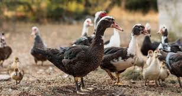

Mwongozo Kamili wa Ufugaji Bora wa Bata Kitaalamu

1. Idara ya Ujenzi wa Banda na Mifumo ya Maji
Bata ni ndege wa majini lakini hawahitaji bwawa kubwa ili kukua; wanaweza kufugwa vizuri kabisa kwenye mfumo wa ndani kwa kutumia mabwawa madogo ya bandia au vyombo vikubwa vya maji.
- Vipimo vya Banda: Banda liwe na mzunguko mzuri wa hewa na nafasi ya kutosha. **Nafasi ya kitaalamu:** Bata 3 hadi 4 waliokomaa kwa kila mita moja ya mraba (1 m²).
- Sakafu na Matandazo: Sakafu ya zege inashauriwa kwa sababu bata hupenda kuchezea maji na kumwaga chini. Weka matandazo mazito ya randa au makapi ya mpunga (nchi 3-4). Matandazo yawekwe mbali kidogo na vyombo vya maji ili kuzuia banda lisilowane lote haraka.
- Eneo la Nje / Bwawa: Jenga uwanja mdogo wa wazi nje uliopingwa wavu. Weka tangi au bwawa dogo la zege lenye kina cha cm 20-30 ambapo bata wanaweza kuchovya vichwa vyao kusafisha macho na pua zao (*dipping & preeningbehavior*).
2. Idara ya Kulelea Vifaranga vya Bata (Brooding Phase)
Ufundi wa Malezi ya Siku 1 - 21
Vifaranga vya bata (ducklings) vinakua haraka sana kuliko vya kuku lakini havina mafuta ya kutosha kulinda miili yao dhidi ya baridi katika wiki mbili za kwanza [1.3].
1. **Joto la Brooder:** Weka joto la nyuzi 30°C hadi 32°C wiki ya kwanza, kisha punguza kidogo kila wiki inayofuata.
2. **Tahadhari Kubwa ya Maji:** **Ni marufuku kabisa kuruhusu vifaranga vya bata kuogelea kwenye bwawa kabla ya kufikisha umri wa wiki 3-4** [1.3]. Manyoya yao ya kianzio hayana tezi ya mafuta (*preen gland*) ya kuzuia maji kuloa ngozi, wakilowa wanaweza kupata dhoruba ya baridi kali (*hypothermia*) na kufa haraka sana [1.3].
3. Idara ya Lishe na Aina za Chakula
Bata wana uwezo mkubwa wa kumeng'enya vyakula vya aina mbalimbali ikijumuisha mabaki ya jikoni, majani, na wadudu. Hata hivyo, kwa ukuaji wa kibiashara, wanahitaji fomula maalum yenye madini ya **Niacin (Vitamin B3)** kwa wingi ili kuzuia ulemavu wa miguu [1.3].
| Aina ya Chakula | Umri wa Bata | Kiwango cha Protini | Lengo Kuu la Lishe |
|---|---|---|---|
| Duck Starter | Wiki 1 hadi 3 | 20% - 22% | Kuhakikisha ukuaji wa haraka wa mifupa na viungo |
| Duck Grower/Finisher | Wiki 4 hadi soko (Nyama) | 15% - 16% | Kujenga nyama nene na uzito wa soko wa kibiashara |
| Duck Layer Mash | Kipindi cha utagaji (Wiki 20+) | 17% - 18% | Kuchochea utagaji na kuimarisha ukubwa wa mayai [1.3] |

📋 Ripoti ya Mahitaji
💵 Makadirio ya Kifedha (Bata wa Nyama)
4. Idara ya Kinga na Udhibiti wa Magonjwa
Bata wana kinga imara sana asilia dhidi ya magonjwa mengi ya kuku, lakini wanaweza kushambuliwa vibaya na magonjwa maalum ya ndege wa majini usafi usipozingatiwa.
Homa ya Bata: Duck Plague (Duck Virus Enteritis)
Uharibifu: Ugonjwa hatari wa virusi unaoenea haraka kwenye mabwawa machafu ya maji. Dalili: Bata wanakuwa wanyonge, macho yanatoa machozi ghafla, wanaharisha kinyesi cha kijani kibichi au kijivu, na wanashindwa kutembea.
Udhibiti: Ugonjwa huu hauna tiba; zuia kwa chanjo mapema na udumishe usafi wa hali ya juu kwa kubadilisha maji ya bwawa au vyombo kila siku [1.3]. Kuzuia ndege wa porini wasishaji maji ya bata wako [1.3].
5. Idara ya Uvunaji na Soko la Kibiashara
Uvunaji wa bata wa nyama una soko zuri sana kwenye mahoteli makubwa na migahawa kutokana na nyama yao kuwa na ladha ya kipekee na nene.
- Aina Maarufu za Soko: **Pekin Duck** (ndio bora kwa nyama, wanakua haraka na kufikia soko ndani ya wiki 7-8), na **Muscovy (Bata Bukini/Mzinga)** ambao wanachelewa kidogo lakini wanatoa uzito mkubwa wa nyama ya daraja la kwanza.
- Umri wa Soko (Nyama): Bata wa nyama (Pekin) wanakuwa tayari kuuzwa kati ya wiki **7 hadi 9** (Siku 50-60) wakiwa na uzito wa kilo **2.5 hadi 3.0** hai, kabla ya manyoya yao magumu ya kuanza kukua upya jambo linalofanya unyonyaji uwe mgumu.
- Soko la Mayai: Bata wa mayai wanaanza kutaga kati ya wiki ya **20 hadi 24**. Mayai ya bata ni makubwa, yana kiwango kikubwa cha protini, na ganda lake ni nene, jambo linalofanya yakae ghalani kwa muda mrefu bila kuharibika ukilinganisha na mayai ya kuku [1.3].